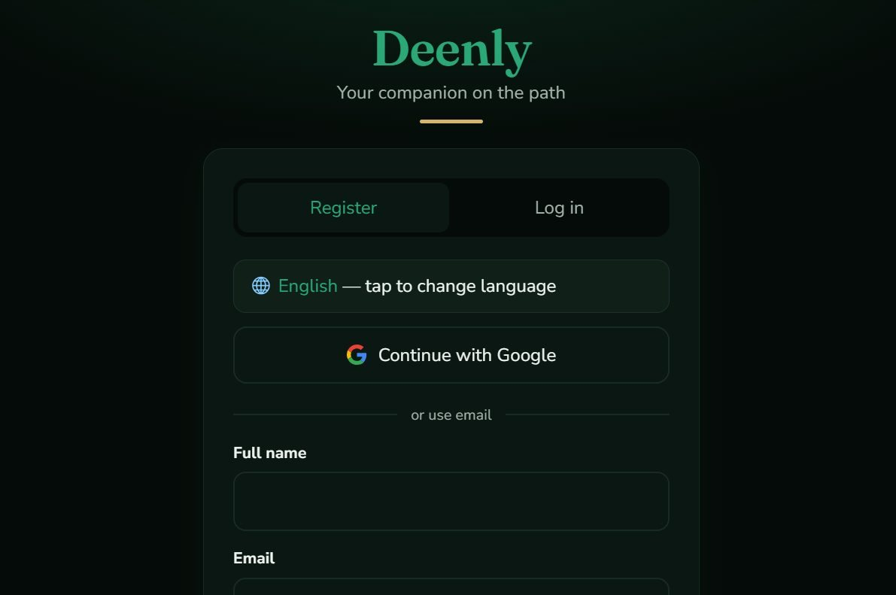

Deenly
Your companion on the path.
An installable Islamic lifestyle web app that brings prayer times, adhan notifications, Qur'an reading and audio, qibla, duas, hadith and worship tracking together in one calm, offline-friendly experience.

Live registration screen — Google sign-in and email/password with payment-gated access.
01 — The problemDaily Islamic tools are scattered and unreliable
Muslims who want to keep track of their daily worship usually juggle several apps: one for prayer times, another for the Qur'an, another for duas, a separate qibla compass, and a separate counter for dhikr. Many are ad-heavy, don't work offline, and some send prayer notifications that simply don't arrive.
Deenly's premise is simple: bring the everyday essentials into one respectful, installable app that works even with a weak or absent connection — and that is honest about what it can and can't do.
02 — The solutionOne PWA, worship-first, offline-capable
Deenly is a FastAPI backend serving a vanilla-JavaScript progressive web app. It's installable to the home screen, caches its shell for offline use, and computes prayer times and qibla direction from the device's location — which never leaves the browser.
- Prayer & adhan. Location-based times with in-app adhan audio and web-push notifications.
- Qur'an. All 114 surahs with Arabic, translation and transliteration, plus per-ayah audio from a public CDN.
- Worship tools. Qibla compass, tasbih counter, duas, adhkar, hadith, lessons, quizzes and the 99 Names.
- Accounts & progress. Email/password and Google sign-in, streaks, bookmarks and worship tracking.
03 — Who it's for
Muslims who want a single, respectful app for daily worship — prayer timing, Qur'an reading and audio, remembrance and learning — particularly in regions where connectivity is intermittent and where heavy, ad-filled apps feel inappropriate for the context.
04 — What's built
Working
- Prayer times from device location
- Qibla compass (great-circle bearing)
- Qur'an: 114 surahs, 3 modes, audio
- Duas, adhkar, 99 Names, hadith
- Lessons & quizzes
- Tasbih counter & streaks
- JWT auth + Google sign-in
- Flutterwave registration payment
- Installable PWA with offline shell
- Dark / light theme, multi-language
In progress
- Closed-app adhan web push (VAPID)
- Gapless Qur'an audio playback
- Community Q&A with moderation
- In-app community chat
- Offline audio downloads
Planned
- AI-assisted answers with sources
- Zakat calculator
- Ramadan & Hajj guides
- Mosque finder improvements
- Premium tier
05 — Technology
06 — Architecture
A single FastAPI app serves both the JSON API and the static frontend, which keeps deployment simple and avoids CORS complexity. The internal API proxies external Islamic-data services behind a cache with rate limiting, so a burst of users doesn't hammer the free public APIs or trip their limits.
Auth uses JWT (HS256) with bcrypt hashes, and access is gated behind a one-time registration payment verified server-side through Flutterwave webhooks — the backend re-verifies each transaction rather than trusting redirect query parameters, which is the classic payment-integration pitfall. User coordinates stay on-device; the browser computes prayer times and qibla locally and only sends a location when the user explicitly asks for nearby mosques.
Your location never leaves your device by default. Prayer times and the qibla bearing are calculated in the browser — the server only sees a location if you tap "find mosques near me".
07 — Challenges
- Notifications that actually arrive. A plain web app can't push in the background. I implemented real Web Push with VAPID keys and a server-side scheduler, then iterated on urgency levels and lock-screen controls so the adhan is audible and dismissible — across many versions of debugging.
- Gapless Qur'an audio. Playing verse-by-verse audio created audible gaps. I reworked the player to pre-fetch and cross-join adjacent ayah audio for continuous recitation, and added background/lock-screen media controls.
- Payment security. Early redirects trusted URL parameters. I switched to server-side webhook verification so a payment can't be faked by editing the redirect.
- Offline-first limits. The service worker caches the app shell but deliberately never caches API or auth routes, so private data isn't stored insecurely.
08 — Results
Deenly is live and publicly accessible. I don't publish user counts or ratings because I have no reliable analytics to support them — the figures above are counts of real features and code, not engagement claims.
09 — What I learned
- Web notifications are genuinely hard. Getting an adhan to sound when the app is closed taught me more about service workers, push urgency and platform quirks than any tutorial could.
- Never trust the client with money. Moving payment verification to server-side webhooks was the difference between a demo and something that could actually be trusted.
- Respect shapes design. Designing for worship meant calm colours, no manipulative patterns, and privacy defaults that assume the user is in a sensitive moment.
10 — Status & next
Deenly is live and in active development. I'm not pretending every planned feature is finished — the community Q&A, chat and offline audio are works in progress, and the AI-assisted answers are planned but not yet complete. Next I want to finish the push reliability work, ship the zakat calculator, and keep refining the Qur'an reading experience.
I'm open to full-stack roles, internships and collaborations — especially around Python backends, PWAs and real-time features.
Get in touch